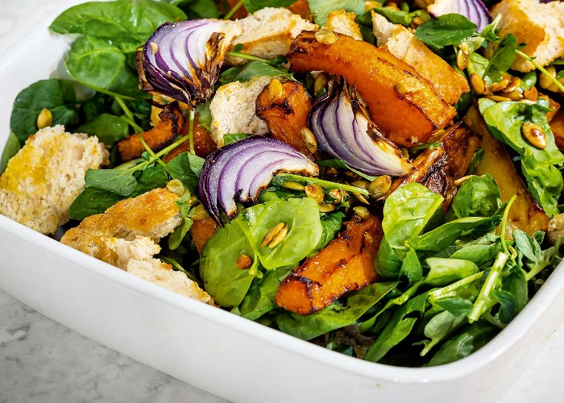

The Garden Salad

Description
Presenting my old-school Garden Salad! Yep, the one I can make any day because I always have these vegetables on hand. Sometimes, I even get real fancy and add a sprinkle of parsley. 😳
There really are no rules when it comes to a Garden Salad. Any greens and any vegetables will do, all tied together with a classic and simple salad dressing. Make this your own!
Ingredients
Salad:
- 1 small head iceberg/li>
- 1 cup cherry or grape tomatoes, halved
- 1 cucumber
- 1 carrot
- 1 tsp parsley or chives
Dressing:
- 250g frozen chopped spinach
- 1 tbsp cider vinegar
- 3 tbsp extra virgin olive oil
- 1/2 tsp Dijon Mustard
- 1/2 tsp cooking/kosher salt
- 1/2 tsp black peppe
Steps
- Dressing: Shake Dressing in a jar. Taste and adjust – more oil for creamier/less tang, vinegar for more tang, sugar if you want touch of sweet.
- Toss: Place all Salad ingredients in a big bowl. Pour over Dressing. Toss well.
- Serve: Transfer to serving bowl and serve immediately!
BON APETIT!